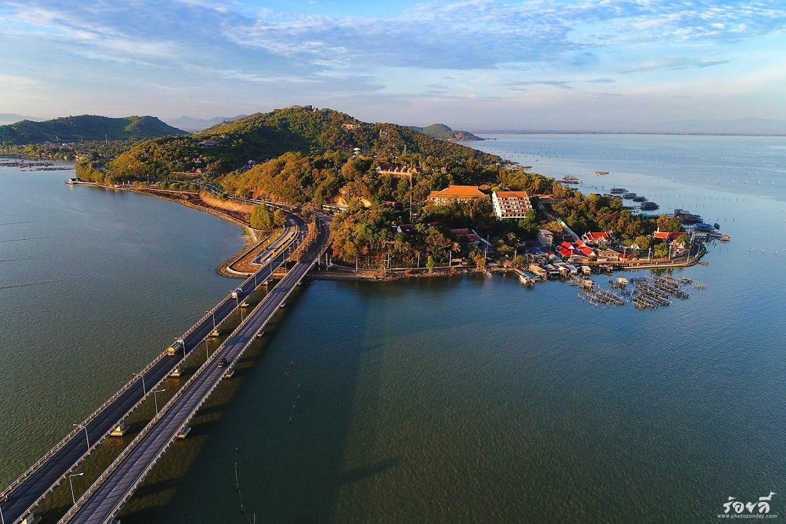

1.เกาะยอ
เกาะยอเป็นเกาะที่ตั้งอยู่ในอำเภอเมืองสงขลา จังหวัดสงขลา ประเทศไทย เป็นเกาะที่มีขนาดเล็กและมีความสำคัญทางประวัติศาสตร์ เนื่องจากมีความเกี่ยวข้องกับการค้าขายและวัฒนธรรมต่างๆ ของท้องถิ่นมาอย่างยาวนาน เกาะยอเป็นสถานที่ท่องเที่ยวที่สวยงาม และเป็นที่รู้จักของนักท่องเที่ยวทั้งชาวไทยและต่างชาติ มีความหลากหลายของธรรมชาติ ทั้งชายหาดที่สวยงามและแหล่งท่องเที่ยวทางประวัติศาสตร์